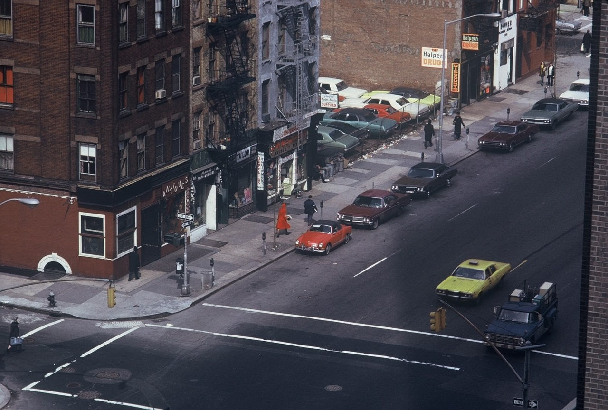
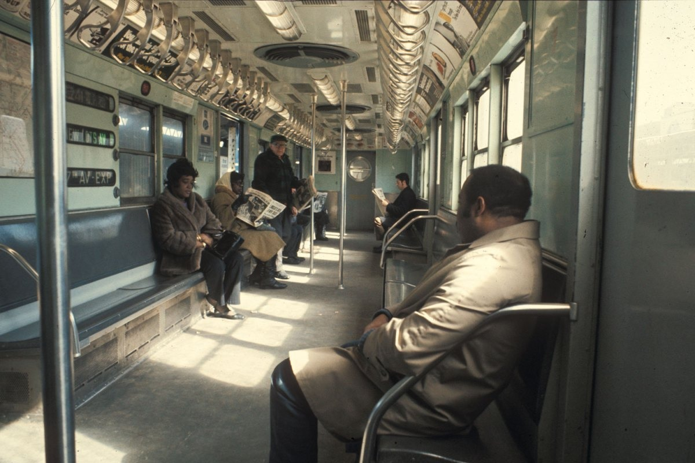
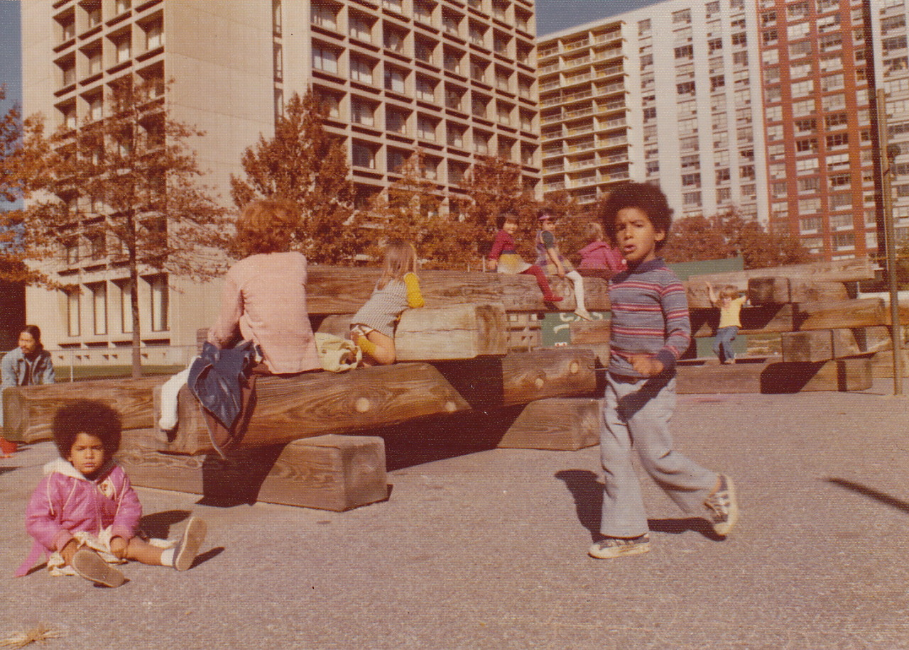
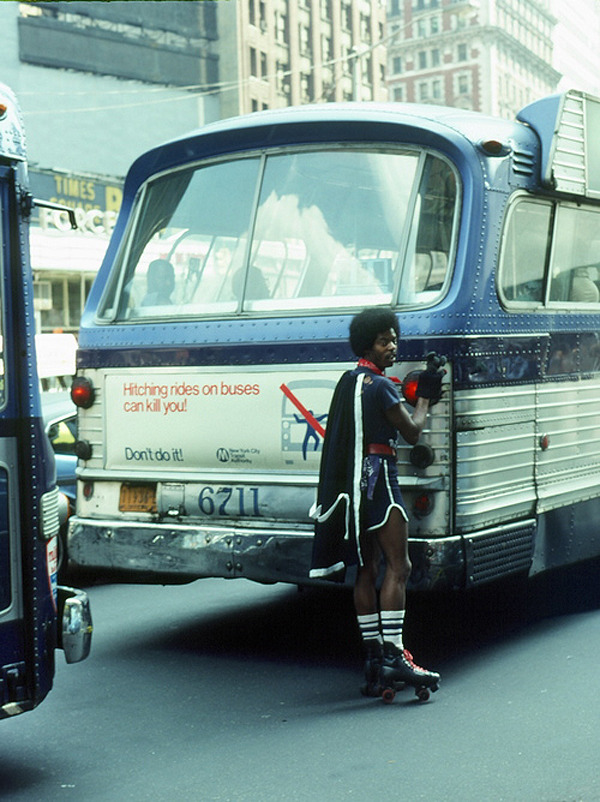

09/02/14 11:13:00 ¶ ●

2nd Ave and 26th St, 1972
09/01/14 13:32:54 ¶ ●

A surprisingly clean 2 train, 1970
09/01/14 13:32:00 ¶ ●

Playground near NYU, 1975
09/01/14 13:16:30 ¶ ● ⬀ ⬈

jonasgrossmann:
new york 1970s @ nycnostalgia